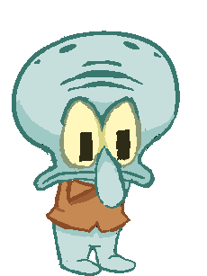
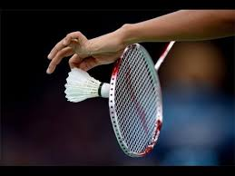
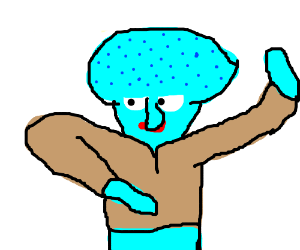

I like to play League.
I also like eggs. Here is a link for eggs :D
EggI really enjoy playing badminton, I play at least 5 hours a week. I also go for a run with my dog, Kiki, who is a chihuahua mix. I hate running, but I do it for my dog <3. I love lychee, mango, and watermelon. I’m addicted to milk tea too. This coming fall, I'll be a senior :D I'm super excited to use some skills that I've learned here from GWC in school too! This program is very special to me because I've met some friends that I finally feel comfortable with, and all the girls here are unique and so nice!
I really love squidward. As you can tell...
Here are some rad fax abt sqedwerb :
Squidward is... A SQUID. Squidward is Spongebob and Patrick's neighbor and is almost always annoyed and yelling at them for their crazy (an loud) antics. Squidward is very artsy Squidward once had his 'laugh box' cut out of him Squidward is employed as a cashier at the Krusty Krab Squidward is not a very good clarinet player Squidward's Easter Island House was once declared the most fancy house on the show House Fancy Squidward has an enemy from high school named Squilliam Fancyson Squidward was voted "Most likely to Suck Eggs" in high school.